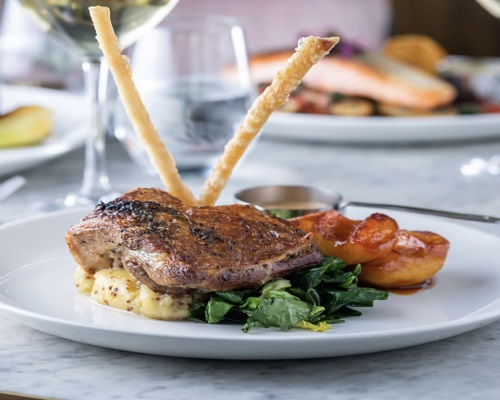
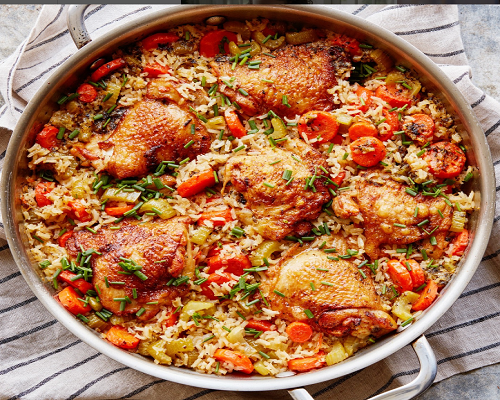

steam bread and meatbeef and ricemeat and vegies with beetroodechecken and mixed pasta sauserice and checken creamy samp and beef stew
creamy pasta spinash and cheeckentotila and vegies with meatmotton stew with greek saladlamb and mash potato in gravysamp beef and carrots gravyeggs and green vegies
Modern-Cusions
steak and pearshot lasagnia

startersfood displayed on table for eventbaffeiself-service catering food
rice and vegies

potjikoisvegitable soupmeat and papoisterscake